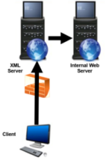

XML external entity injection (XXE) (SSRF)
OWASP added
XXE (XML External
Entity) as a new category to the OWASP Top 10 in 2017
• Attackers can exploit vulnerable XML
processors if they can upload XML or include hostile content in an XML document, exploiting vulnerable code,
dependencies or integrations…
• By default, many older XML processors allow specification of an external
entity, a URI that is dereferenced and evaluated during XML processing…
• These flaws can be used to extract
data, execute a remote request from the server, scan internal systems, perform a denial-of-service attack, as well
as execute other attacks.
XXE and SAST ToolsXML External Entities (XXE) can be
discovered by
SAST
(Static Application Security Testing) Tools, which analyzes code when it is not
running
XXE flaws are a class of injection attacks• XXE are Injection
attacks, like Command Injection and SQL injection, allow the attacker to hijack control of the backend
parser/interpreter
• The difference is the language being used on the backend: Instead of Bash (for typical
Command Injection on Linux/UNIX servers) or SQL (for SQL injection), in this case it is XML. The attack is the same
otherwise: A programmer has not performed input sanitization, allowing the attacker to execute commands on the web
server.
XXE during Black Box & Crystal Box TestingXXE is much easier to test
when the penetration tester has access to the backend code(crystal-box, aka full-knowledge), as well as the XML
format itself.
If a client does want a black-box (aka zero-knowledge) test for XXE (where no inside
information is provided), usually is better to to convince the client to switch to crystal box.
If the client
is stick to black-box testing, the penetration tester need:
1) discover web applications that use XML, PHP is
common (
more difficult)
2) infer the XML design itself (less
difficult)
What OWASP
say about XXEXML eXternal Entity injection (XXE) is a type of attack against an application that parses
XML input.
This attack occurs when untrusted XML input containing a reference to an external entity is
processed by a weakly configured XML parser.
This attack may lead to the disclosure of confidential data,
denial of service, Server Side Request Forgery (SSRF), port scanning from the perspective of the machine where the
parser is located, and other system impacts.
General
GuidanceThe safest way to prevent XXE is always to disable DTDs (External Entities) completely.
Depending on the parser, the method should be similar to the following:
factory.setFeature("http://apache.org/xml/features/disallow-doctype-decl", true);
Server Side Request Forgery (SSRF)
XXE is an example of Server-Side
Request Forgery (SSRF) that is different but related to CSRF (Cross-Site Request Forgery)
◇ SSRF: Forged
requests originating from a
server  ◇ CSRF: Forged requests originating from a
client
What OWASP say about SSRF In
a Server-Side Request Forgery (SSRF) attack, the attacker can abuse functionality on the server to read or update
internal resources.
The attacker can supply or a modify a URL which the code running on the server will read
or submit data to, and by carefully selecting the URLs, the attacker may be able to read server configuration such
as AWS metadata, connect to internal services like http enabled databases or perform post requests towards internal
services which are not intended to be exposed.
Bibliography•
https://portswigger.net/web-security/xxe•
https://www.synack.com/blog/a-deep-dive-into-xxe-injection/•
https://book.hacktricks.xyz/pentesting-web/xxe-xee-xml-external-entity